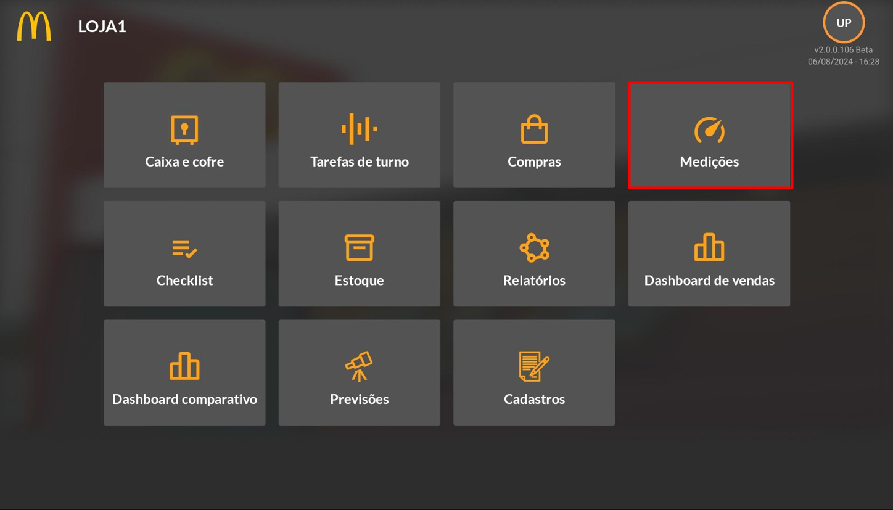
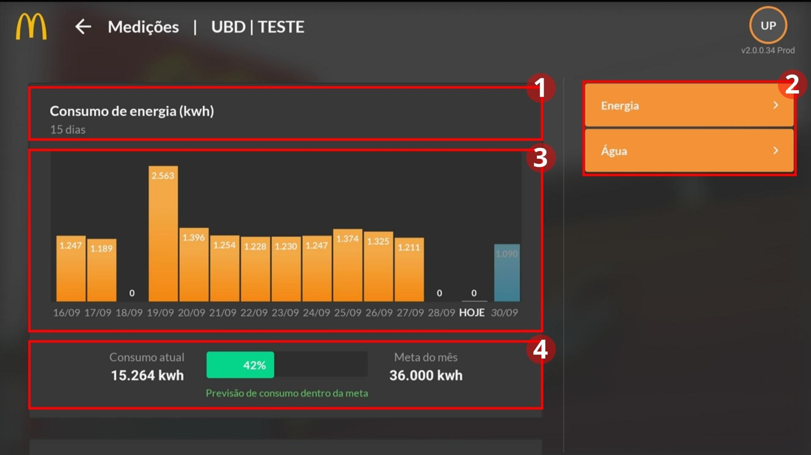
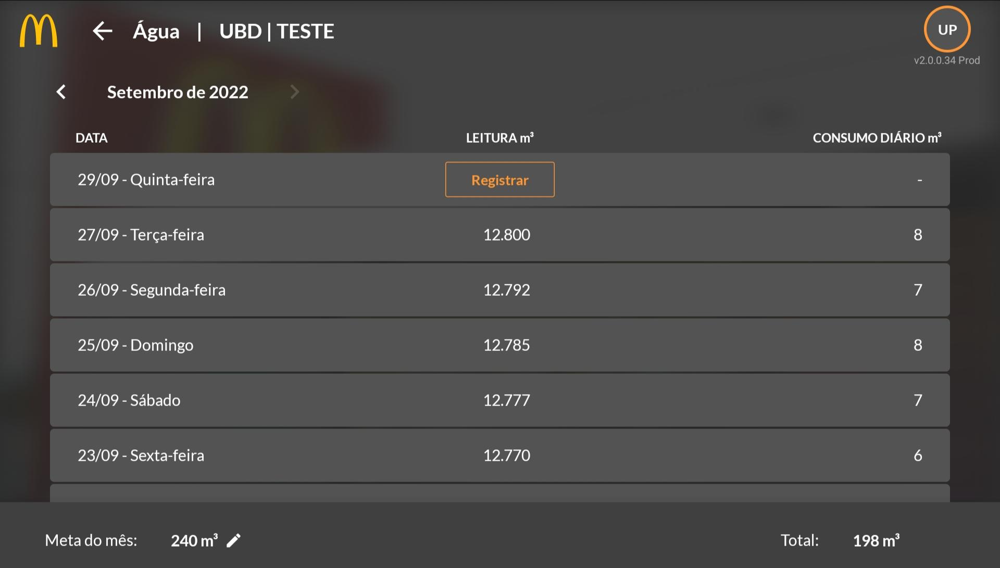
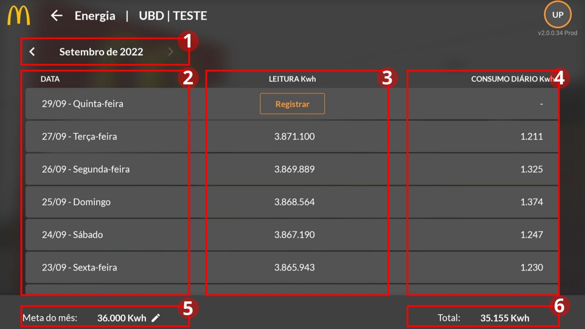

Medições
Introdução
O quarto módulo presente na tela inicial é o de “Medições”, no qual é possível registrar as medições diárias de água e energia, adicionar metas para consumo máximo do mês e visualizar o andamento dessa meta nos últimos 15 dias através dos gráficos de consumo, para um melhor gerenciamento das lojas.
Qual utilidade deste módulo?
O módulo serve para registrar a leitura diária do consumo de água e de energia da loja, a fim de obter um controle sobre os gastos, para isso deve ser adicionada uma meta de consumo máximo do mês, sendo possível visualizar o andamento dessa meta através dos Gráficos de Barra: Consumo de Energia (kwh) e Consumo de Água (m3) na tela inicial.
Acesso ao Módulo
 Ao abrir o módulo, a tela acima é exibida, apresentando dois gráficos (na imagem acima foi representado somente um gráfico como exemplo) (1), além disso, no canto direito, há um menu com as opções de “Energia” e “Água” (2), no qual são registradas as leituras diárias da loja.
Os Gráficos de Consumo de energia (kwh) e Consumo de água (m3) trazem as informações de medição dos últimos 15 dias, indicando a data e seu respectivo dado registrado (3), no rodapé está a quantia total consumida, uma barra com a porcentagem total atingida (de acordo com a meta mês estabelecida), e uma análise da previsão, caso esteja acima da meta ficará vermelho, mas se estiver dentro, ficará verde (4).
Água
A tela de registro da leitura diária do consumo de água possui o mesmo layout e funcionamento da tela de “Energia” apresentada anteriormente, sendo assim, não será necessário explicar cada campo e sua utilização, pois segue o modelo já descrito e detalhado. A imagem abaixo representa a tela exibida ao clicar na opção “Água” do menu lateral no módulo de medições.
Para obter uma visualização do gráfico é necessário registrar a leitura em pelo menos duas datas dentro de um período de quinze dias e inserir a meta do mês para fazer a gestão do consumo, pois segue a mesma lógica do cálculo de consumo diário em “Energia”.
Energia
Ao clicar na função “Energia”, é aberta a tela (representada pela imagem abaixo) na qual se realiza o processo de registro da leitura do medidor de energia. É exibida uma tabela com todos os registros realizados diariamente dentro do mês escolhido (1), possuindo três colunas: a primeira indica a data (2), a segunda exibe a leitura registrada pelo usuário (que só pode ser registrada no dia) (3) e a terceira realiza o cálculo do consumo diário (4).
Para obter uma visualização do gráfico é necessário registrar a leitura em pelo menos duas datas dentro de um período de quinze dias e inserir a meta do mês para fazer a gestão do consumo. O motivo disso é para que seja feito o cálculo do consumo diário, pois a leitura registrada sempre será acumulativa e o consumo diário é feito subtraindo um valor do outro, e como o gráfico mostra o consumo diário dos últimos quinze dias corridos, caso não tenha sido registrado nenhum valor, nada será exibido na tela inicial.
Na parte inferior temos a Meta do Mês (5) que pode ser alterada e estabelecida a qualquer momento e no canto inferior direito é exibido o Total dos registros daquele mês (6).